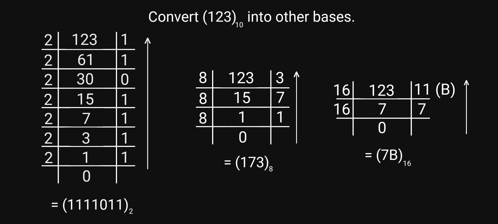
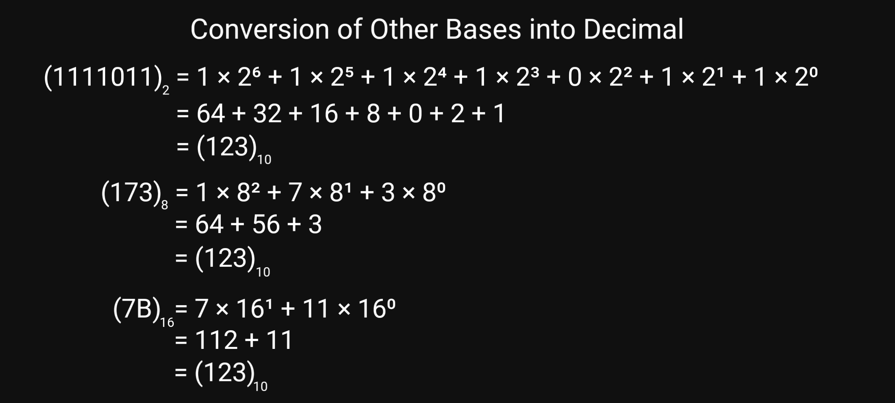
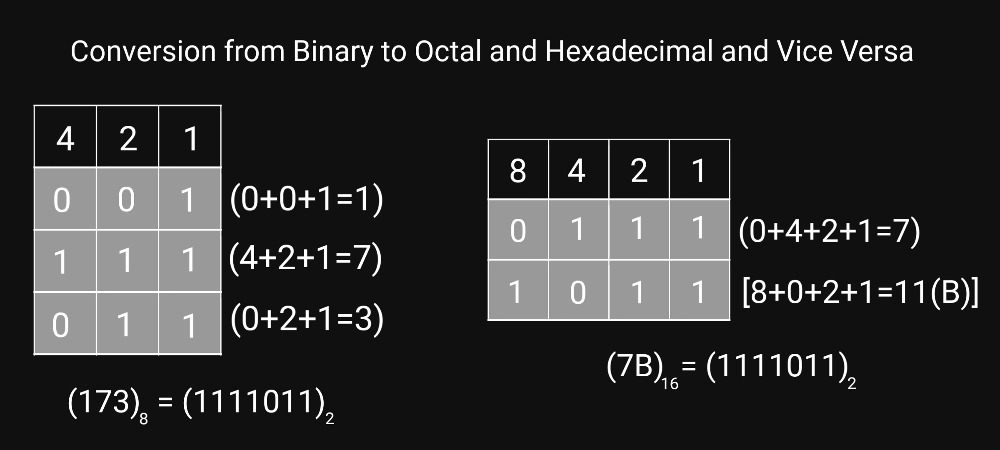

Number Base Converter
With our Number Base Converter, you can convert a number from one base to another. Just enter the number in any one of the input field, and this program will convert it into number with other rest bases.
Instruction: The input field will turn RED, if you enter any invalid number. For example, if you enter 2 or 3 into binary input field, then it is an invalid number as binary number system only consists of 0 and 1.
What is Number System and Number Base?
A number system is a mathematical notation of expressing numbers using digits or symbols. The number of unique digits or symbols used in the notation of a number system is its base. There are four major number system. They are;
- Decimal Number System: This number system has base 10 consisting digits from 0 to 9.
- Binary Number System: This number system has base 2 consisting digits 0 and 1.
- Octal Number System: This number system has base 8 consisting digits from 0 to 7.
- Hexadecimal Number System: This number system has base 16 consisting digits from 0 to 9 and alphabets from A to F where (A to F) represents numbers from (10 to 15) respectively.
Base Conversions
Conversion of Decimal into Other Bases
To convert decimal number into any other number system, divide the decimal number by the base of the desired number system. The remainders during each division taken in reverse order gives the required result.
When converting from decimal to hexadecimal, if a remainder is a number from 10 to 15, replace it with the respective alphabet (A to F).

Conversion of Other Bases into Decimal
To convert any other number into decimal, multiply each digits or symbols of the given number by its base. The power of the base is increased by 1 from 0 while going from right to left.
Also, when converting from hexadecimal to decimal, replace the alphabets (A to F) with their respective numbers (10 to 15).

Conversion of Binary into Octal or Hexadecimal
To perfrom this conversion, we can simply convert the given binary number into decimal and then, by using the above methods, we can convert that obtained decimal into respective octal or hexadecimal.
There is also another short method to do this conversion. At first, form a table. For the conversion from binary to octal, make three columns; 4, 2 and 1. Similarly, for hexadecimal, make four columns; 8, 4, 2 and 1. Now, simply fill the binary number into the table by grouping the digits into 3-bit (for octal) or 4-bit (for hexadecimal). At last, add those numbers (8, 4, 2 or 1) which have 1 (binary) in them.

Conversion of Octal or Hexadecimal into Binary
We can perform this conversion simply by converting the octal or hexadecimal to decimal and then converting the obtained decimal to binary.
We can also form the table as mentioned above. For octal, the columns are 4, 2 and 1 and for hexadecimal, they are 8, 4, 2 and 1. Now, put 1 in those places which add up to give each digit of the respective octal or hexadecimal number. Fill the rest of the places by 0s. Combining them gives the binary number. Basically, this method is the converse of what we did above during the convrsion of binary into octal or hexadecimal.
Conversion of Octal into Hexadecimal or Vice Versa
This can be done by first converting the given octal or hexadecimal number into decimal and then converting the decimal into the respective octal or hexadecimal.
Similarly, we can also do this conversion by forming the table as mentioned above. At first, convert the octal or hexadecimal number into binary by forming the table. And then, again form another table to convert the obtained binary into desired octal or hexadecimal.